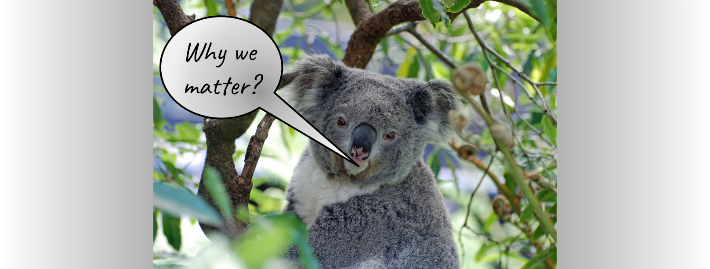
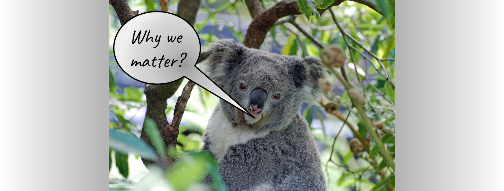

They matter because they're an iconic Aussie animal that people know about.
They way about 14kgs
They're 60cm to 85cms longs
Koalas are marsupials
Koalas eat eyculyptus leaves - about 2.5 pounds a day
Koalas sleep alot - 18 hours a day
Koalas can only live in one place in the world - Australia
Did you know that the Koala has been uesed for a Mascot at the 2018 Commonwealth Games (his name was Borobi)!
This takes alot of time to make